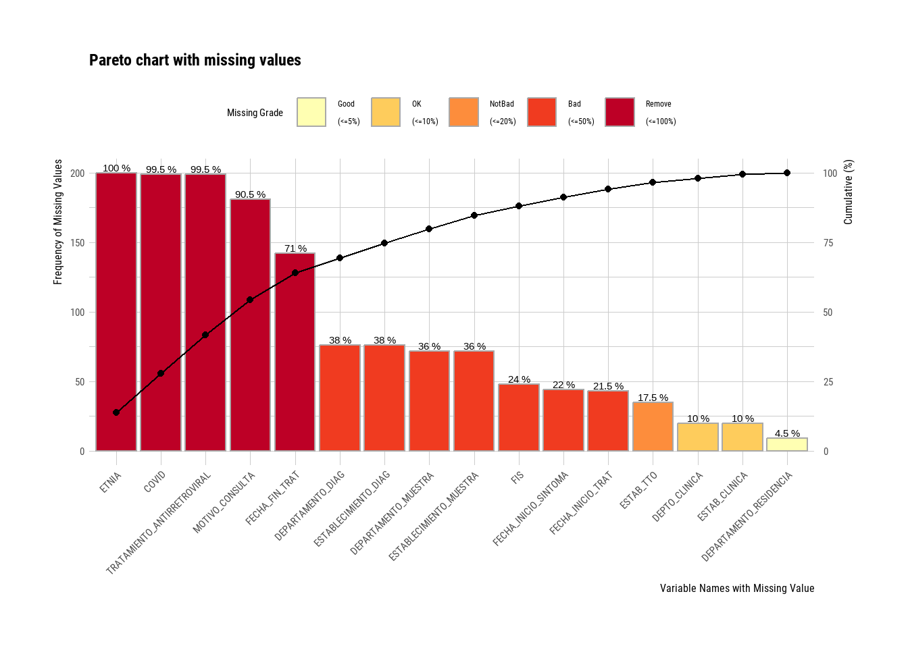
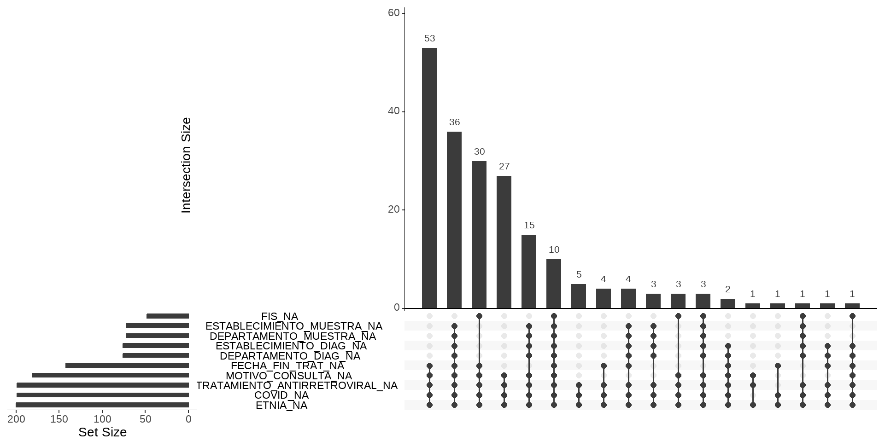
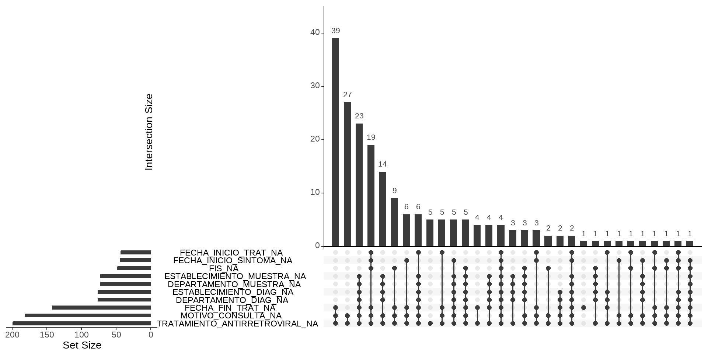

datos |>
summarise(Cantidad_NA = sum(is.na(variable)))Datos perdidos (missing)
Cuando trabajamos con datos los valores perdidos o faltantes (conocidos en inglés como missing) pueden constituir un serio problema en nuestras variables por lo que deben explorarse y manejarse cuidadosamente en las etapas iniciales del análisis.
Estos datos pueden faltar por muchas razones, pero generalmente se suelen agrupar en dos categorías: valores faltantes informativos y valores faltantes aleatorios. Los informativos implican una causa estructural, ya sea por deficiencias en la forma en que se recopilaron los datos o por anomalías en el entorno de observación. Los aleatorios son aquellos que tienen lugar independientemente del proceso de recopilación de datos.
Dependiendo de si los valores faltantes son de uno u otro tipo, se procederá de una u otra manera. A los informativos, en general, se les puede asignar un valor concreto (por ejemplo, “Ninguno” o “Sin dato”), ya que este valor puede convenir tenerlo como una categoría más de la variable. Los aleatorios, en cambio, pueden manejarse mediante la eliminación o la imputación.
Resumiendo, las tareas habituales respecto a estos valores consisten en:
- Evaluar la existencia de valores perdidos (exploración y conteo).
- Excluir los valores ausentes (si es posible y conveniente).
- Etiquetar o recodificar los valores ausentes (imputación de datos).
Respecto a la imputación existen numerosa bibliografía sobre diversos algoritmos para realizarlo que no vamos a incluir en este curso.
Detectar observaciones incompletas (valores missing)
El lenguaje R gestiona a los datos perdidos mediante el valor especial reservado NA de Not Available (No disponible),
En principio, sólo vamos a enfocarnos en como podemos utilizar algunas funciones del lenguaje para detectarlos y contabilizarlos. A partir de su identificación decidiremos que hacer con ellos, dependiendo de su cantidad y extensión, es decir, si los valores faltantes son la mayoría de una variable o la mayoría de una observación o bien si representan la falta de respuesta de una pregunta, con lo cual convenga etiquetarlos.
Una manera de abordar esta tarea con R base para una variables es hacer la sumatoria de valores NA, usando la función de identificación is.na().
Pero debemos hacer esta tarea variable por variables, lo que resulta muy trabajoso.
También la función summary() aplicada sobre el dataframe completo informa sobre la cantidad de NA de variables cuantitativas y lógicas. No lo hace con las de tipo caracter.
Más completo y en una sola línea la función find_na() del paquete dlookr muestra el porcentaje de valores perdidos en todas las variables de una tabla de datos y se complementa con el gráfico de barras de pareto plot_na_pareto().
library(dlookr)
find_na(datos, rate = T) # argumento rate = T muestra % de valores NA SEXO FECHA_NACIMIENTO
0.0 0.0
EDAD_DIAGNOSTICO GRUPEDAD
0.0 0.0
PROVINCIA_RESIDENCIA ID_PROV_INDEC_RESIDENCIA
0.0 0.0
DEPARTAMENTO_RESIDENCIA ID_DEPTO_INDEC_RESIDENCIA
4.5 0.0
LOCALIDAD_RESIDENCIA ESTABLECIMIENTO_SALUD
0.0 0.0
ESTABLECIMIENTO_CARGA PROVINCIA_CARGA
0.0 0.0
DEPTO_CARGA ESTAB_CLINICA
0.0 10.0
DEPTO_CLINICA PPL
10.0 0.0
SERVICIO_PENITENCIARIO FECHA_APERTURA
0.0 0.0
FECHA_NOTIFICACION MOTIVO_CONSULTA
0.0 90.5
CLASIFICACION_MANUAL CLASIF_INICIO_TRAT
0.0 0.0
ID_PULMONAR FIS
0.0 24.0
ID_EXTRAPULMONAR FECHA_INICIO_SINTOMA
0.0 22.0
RESULTADO_RX Bacteriologia
0.0 0.0
Baciloscopia Cultivo
0.0 0.0
PRUEBA_RESISTENCIA RESISTENCIA
0.0 0.0
Droga Tipo_Resistencia
0.0 0.0
ESTABLECIMIENTO_MUESTRA DEPARTAMENTO_MUESTRA
36.0 36.0
ESTABLECIMIENTO_DIAG DEPARTAMENTO_DIAG
38.0 38.0
Prueba_VIH VIH
0.0 0.0
TRATAMIENTO_ANTIRRETROVIRAL Diag_rapido
99.5 0.0
Resultado_diag_rapido EMBARAZO
0.0 0.0
DIABETES CONSUMO_PROB_DROGAS
0.0 0.0
ENF_RESP_CRONICA COVID
0.0 99.5
SE_DECLARA_PUEBLO_INDIGENA ETNIA
0.0 100.0
TABAQUISMO ALCOHOLISMO
0.0 0.0
ESTAB_TTO FECHA_INICIO_TRAT
17.5 21.5
FECHA_FIN_TRAT RESULTADO_TRATAMIENTO
71.0 0.0 plot_na_pareto(datos,
only_na = T) # argumento only_na = T muestra variables solo con algún valor NA 
Gestión de NA’s con naniar
El paquete naniar es un paquete que reúne funciones diseñadas para el manejo de valores faltantes pensado para una gestión completa.
library(naniar)Sus caracteristicas generales son:
Proporciona funciones analíticas y visuales de detección y gestión
Es compatible con el mundo “tidy” de tidyverse
Aborda las relaciones o estructura de la falta de datos.
Posibilita el trabajo de imputación (no tratado en este curso)
De las muchas funciones que tiene el paquete seleccionamos algunas para mostrar que son muy útiles para una tarea básica.
La función miss_var_summary() proporciona un resumen sobre los valores NA en cada variable del dataframe similar a find_na() que vimos anterioremente pero con una salida en forma de tabla y un recento absoluto, además de porcentual.
miss_var_summary(datos)# A tibble: 56 × 3
variable n_miss pct_miss
<chr> <int> <num>
1 ETNIA 200 100
2 TRATAMIENTO_ANTIRRETROVIRAL 199 99.5
3 COVID 199 99.5
4 MOTIVO_CONSULTA 181 90.5
5 FECHA_FIN_TRAT 142 71
6 ESTABLECIMIENTO_DIAG 76 38
7 DEPARTAMENTO_DIAG 76 38
8 ESTABLECIMIENTO_MUESTRA 72 36
9 DEPARTAMENTO_MUESTRA 72 36
10 FIS 48 24
# ℹ 46 more rowsPor el lado gráfico, tiene uno muy interesante porque visualiza las relaciones de los valores ausentes de las variables. Se llama gg_miss_upset() y genera un gráfico Upset en función de la existencia de valores NA.
gg_miss_upset(datos)  Por defecto, construye el gráfico tomando las primeras 10 variables de la tabla de datos con valores NA de forma decreciente. Esto se puede modificar cambiando el argumentos nset =.
Tiene dos entradas para su lectura. En la parte inferior izquierda nos muestra los nombres de las variables con valores NA ordenadas de menor a mayor medida en una escala absoluta. El gráfico de barras principal, ordenado de forma predeterminada de mayor a menor, informa sobre las cantidades absolutas de valores NA de las combinaciones que aperecen debajo del eje x del gráfico.
Por ejemplo, la variable ETNIA tiene todos sus observaciones como NA y la variable COVID casi lo mismo, mientras que la variable FIS cerca de 50.
Podemos eliminar del gráfico a esas dos variables con casi todos los valores NA, usando formas de tidyverse previas dado que las funciones de naniar son compatibles.
datos |>
select(-ETNIA, -COVID) |>
gg_miss_upset() 
Al quitar esas dos variables, aparecen dos nuevas con cantidades menores de NA que FIS (FECHA_INICIO_TRAT y FECHA_INICIO_SINTOMA), es decir siguen siendo 10 por defecto.
Si miramos los datos faltantes con estructura notamos que la combinación más frecuente de NA combinados es FECHA_FIN_TRAT, MOTIVO_CONSULTA y TRATAMIENTO_ANTIRETROVIRAL con 39 observaciones a las que le faltan valores en las tres variables simultáneamente.
Reemplazo de valores
El paquete tiene además dos funciones de reemplazo que funcionan como herramientas antagónicas.
replace_with_na() reemplaza valores o etiquetas específicas con valores NA y replace_na_with() hace lo contrario, reemplaza valores NA con valores específicos, como “Sin dato” por ejemplo.
La primera función trabaja sobre el dataframe completo adignando valores NA en la categoría o valor que le indiquemos.
Por ejemplo, la variable ID_PROV_INDEC_RESIDENCIA no tiene valores perdidos pero si hay una categoría/código desconocido (“00”), entonces podemos decirle que ese código sea NA.
datos |>
summarise(Cantidad_NA = sum(is.na(ID_PROV_INDEC_RESIDENCIA)))# A tibble: 1 × 1
Cantidad_NA
<int>
1 0datos |>
replace_with_na(replace = list(ID_PROV_INDEC_RESIDENCIA = "00")) |>
summarise(Cantidad_NA = sum(is.na(ID_PROV_INDEC_RESIDENCIA)))# A tibble: 1 × 1
Cantidad_NA
<int>
1 2replace_na_with() etiqueta valores faltantes con categorías definidas que serán tenidas en cuenta a la hora de hacer tablas u otras operaciones. Esta función se utiliza dentro de mutate() del tidyverse.
La variable MOTIVO_CONSULTA tiene 181 valores NA que serán etiquetados como “Sin dato” de esta forma:
datos |>
count(MOTIVO_CONSULTA)# A tibble: 4 × 2
MOTIVO_CONSULTA n
<chr> <int>
1 Contacto 2
2 Examen de Salud 1
3 Sintomático Respiratorio 16
4 <NA> 181datos |>
mutate(MOTIVO_CONSULTA = replace_na_with(MOTIVO_CONSULTA,
"Sin dato")) |>
count(MOTIVO_CONSULTA)# A tibble: 4 × 2
MOTIVO_CONSULTA n
<chr> <int>
1 Contacto 2
2 Examen de Salud 1
3 Sin dato 181
4 Sintomático Respiratorio 16Eliminación de valores NA
Cuando decidimos eliminar valores NA de alguna variable, salvo que se quite la variable entera, tenemos que tener en cuenta que perdemos la observación completa, incluso valores válidos que se encuentran en otras variables.
R base tiene una función llamada na.omit() que omite toda observación donde al menos haya un solo NA en alguna variable.
na.omit(datos)# A tibble: 0 × 56
# ℹ 56 variables: SEXO <chr>, FECHA_NACIMIENTO <dttm>, EDAD_DIAGNOSTICO <dbl>,
# GRUPEDAD <chr>, PROVINCIA_RESIDENCIA <chr>, ID_PROV_INDEC_RESIDENCIA <chr>,
# DEPARTAMENTO_RESIDENCIA <chr>, ID_DEPTO_INDEC_RESIDENCIA <chr>,
# LOCALIDAD_RESIDENCIA <chr>, ESTABLECIMIENTO_SALUD <chr>,
# ESTABLECIMIENTO_CARGA <chr>, PROVINCIA_CARGA <chr>, DEPTO_CARGA <chr>,
# ESTAB_CLINICA <chr>, DEPTO_CLINICA <chr>, PPL <chr>,
# SERVICIO_PENITENCIARIO <chr>, FECHA_APERTURA <dttm>, …Aplicar esta función sobre el dataframe datos produce que no quede ninguna observación, dado que vimos que la variable ETNIA tenía sus doscientos valores vacíos.
Una función superadora es drop_na() de tidyr que pertenece a tidyverse, porque omite observaciones que tengan variables que definamos, por ejemplo:
datos |>
drop_na(ETNIA)# A tibble: 0 × 56
# ℹ 56 variables: SEXO <chr>, FECHA_NACIMIENTO <dttm>, EDAD_DIAGNOSTICO <dbl>,
# GRUPEDAD <chr>, PROVINCIA_RESIDENCIA <chr>, ID_PROV_INDEC_RESIDENCIA <chr>,
# DEPARTAMENTO_RESIDENCIA <chr>, ID_DEPTO_INDEC_RESIDENCIA <chr>,
# LOCALIDAD_RESIDENCIA <chr>, ESTABLECIMIENTO_SALUD <chr>,
# ESTABLECIMIENTO_CARGA <chr>, PROVINCIA_CARGA <chr>, DEPTO_CARGA <chr>,
# ESTAB_CLINICA <chr>, DEPTO_CLINICA <chr>, PPL <chr>,
# SERVICIO_PENITENCIARIO <chr>, FECHA_APERTURA <dttm>, …datos |>
drop_na(FIS)# A tibble: 152 × 56
SEXO FECHA_NACIMIENTO EDAD_DIAGNOSTICO GRUPEDAD PROVINCIA_RESIDENCIA
<chr> <dttm> <dbl> <chr> <chr>
1 M 1948-06-22 00:00:00 74 70-74 Tierra del Fuego
2 F 1981-06-20 00:00:00 41 40-44 Buenos Aires
3 F 1989-03-30 00:00:00 33 30-34 Buenos Aires
4 M 2006-11-17 00:00:00 16 15-19 Chaco
5 M 1993-06-02 00:00:00 29 25-29 Jujuy
6 M 1989-04-08 00:00:00 33 30-34 Buenos Aires
7 F 1977-07-30 00:00:00 45 45-49 Buenos Aires
8 F 2008-01-10 00:00:00 15 15-19 Chaco
9 M 1987-11-27 00:00:00 35 35-39 Buenos Aires
10 F 2002-12-21 00:00:00 20 20-24 Buenos Aires
# ℹ 142 more rows
# ℹ 51 more variables: ID_PROV_INDEC_RESIDENCIA <chr>,
# DEPARTAMENTO_RESIDENCIA <chr>, ID_DEPTO_INDEC_RESIDENCIA <chr>,
# LOCALIDAD_RESIDENCIA <chr>, ESTABLECIMIENTO_SALUD <chr>,
# ESTABLECIMIENTO_CARGA <chr>, PROVINCIA_CARGA <chr>, DEPTO_CARGA <chr>,
# ESTAB_CLINICA <chr>, DEPTO_CLINICA <chr>, PPL <chr>,
# SERVICIO_PENITENCIARIO <chr>, FECHA_APERTURA <dttm>, …En el ejemplo anterior aplicamos la función sobre la variable ETNIA y FIS, en el primer caso omite todas las observaciones y en el segundo caso 48 observaciones, mostrando las 152 restantes sin NA en la variable.
Por último, debemos saber que eliminar observaciones por valores faltantes reduce la potencia de cualquier test de hipotesis o modelo que hagamos porque se reduce el tamaño de la muestra.